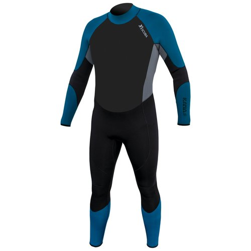
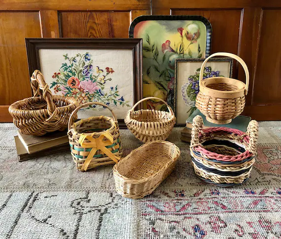

Step 1: Suit Up for Success!
First things first, let’s get you into that fashionable scuba gear! Remember, looking good is half the battle. So, don your wetsuit, flippers, and of course, your designer diving goggles. We believe in safety first, style a very close second.

Step 2: Meet Your Underwater Crafting Buddy
Every great artist needs a muse. Yours might be a fish. Don’t be shy to say hello to your new finned friends – they might just inspire your first basket design.
Step 3: Choose Your Seaweed Strands
We’ve got a colorful array of seaweed strands for you to choose from. Pick the ones that speak to your soul – or at least the ones that say, "Hey, I'd make a great basket!"
Step 4: The Underwater Weaving Waltz
Now, let's get to weaving! Follow our instructor as they lead you through the mesmerizing dance of the underwater weaver. Breathe slowly, weave swiftly, and try not to tickle any passing fish.
Step 5: The Art of Holding Your Breath (and Your Laughter)
Weaving underwater isn't just about craft; it's about poise. And occasionally not bursting into laughter when a curious octopus decides your basket is its new hat.
Step 6: Basket Show-and-Tell with the Fish
Once your masterpiece is complete, it’s time to show it off. If you’re lucky, a school of fish might just swim by to admire your work. They’re the harshest critics, so brace yourself for some honest feedback.

Step 7: Surface with Your Creation
Time to head back to the surface. Emerging from the water with your basket is a moment of triumph – like a dolphin with a diploma. Take a moment to bask in the glory!
Step 8: The Basket After-Party
Back on land, it’s time to celebrate with your fellow weavers. Share stories of your underwater escapades, show off your seaweed creation, and start planning your next dive.
Step 9: Certificate of Bravery and Basketry
You did it! You braved the deep, danced with fish, and wove a basket to boot. Receive your well-deserved Certificate of Bravery and Basketry, complete with a seaweed ribbon.
Step 10: Join the Deep-End Weaver Alumni
Congratulations, you’re now an official member of the Deep-End Weavers Alumni! Welcome to a community of the crafty and the brave, the weavers of the watery depths.